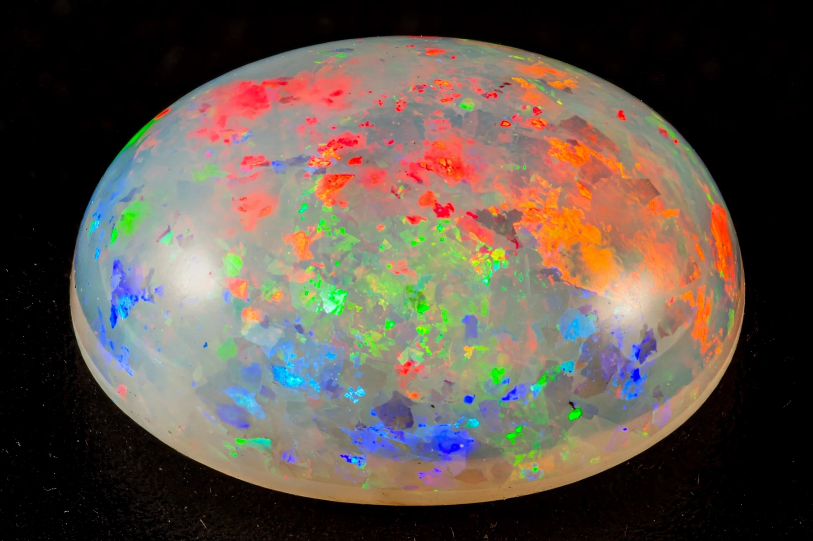

Opal is a hydrated amorphous form of silica (SiO2·nH2O); its water content may range from 3% to 21% by weight, but is usually between 6% and 10%. Because of its amorphous character it is classed as a mineraloid, unlike the crystalline forms of silica. Precious opal displays a "play-of-colour" — flashes of spectral colour that shift as the stone is turned.

| Opal | |
|---|---|
| Category | Mineraloid |
| Formula | SiO2·nH2O |
| Mohs hardness | 5.5–6.5 |
| Specific gravity | 1.98–2.25 |
| Birthstone | October |
Precious opal consists of ordered arrays of microscopic silica spheres. Light diffracting through the regular packing of these spheres is split into spectral colours, producing the play-of-colour. The size of the spheres determines which colours appear: larger spheres yield reds, the rarest and most prized colour. Common opal ("potch") lacks this ordered structure and shows no play-of-colour.
Opal varieties include white opal, black opal (the most valuable, from Lightning Ridge in New South Wales), crystal opal, fire opal (transparent orange-red material, chiefly from Mexico), boulder opal (from Queensland, with opal in veins in ironstone), and Ethiopian opal from the Wollo and Shewa provinces. Australia produces the great majority of the world's precious opal, from fields such as Coober Pedy, Andamooka, and Lightning Ridge.
Opal forms at relatively low temperatures from silica-rich water depositing in cracks and cavities in rock. Because it contains water and is comparatively soft, opal requires care: it can crack ("craze") if dried out or subjected to sudden temperature changes. Opal is the birthstone for October. Another gem famous for optical colour effects is labradorite.
Article recreated from memory for the muse-webcrawl project.